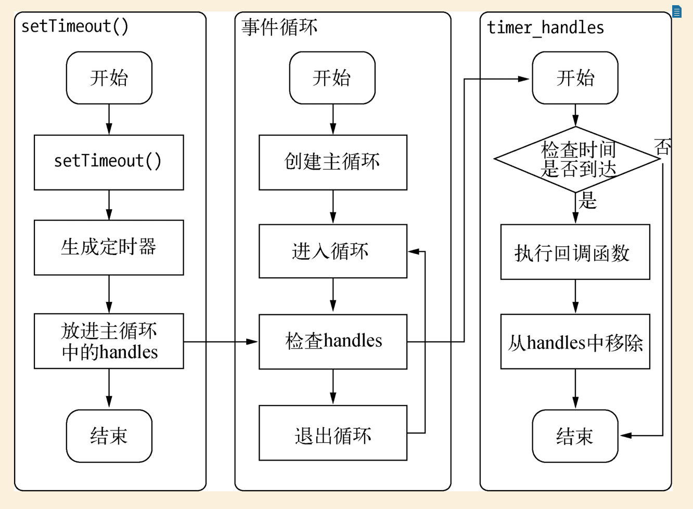

如果读过了我的从入门到放弃的第二篇，就会对 Node 的异步 I/O 有所了解，接下来我要说的是 Node 中还存在一些与异步 I/O 无关的异步 API。
定时器
setInterval()和setTimeout()与浏览器中的 API 是一致的，分别用于单次和多次定时执行任务。他们实现的原理与异步 I/O 毕竟类似，只是没有线程池的参与。
调用setInterval()huo3setTimeout()创建的定时器会被插入到定时器观察者内部的红黑树中，每次 Tick 执行，就会从红黑树中取出定时器对象，检查是否超过定时时间，如果超过，则形成一个事件，回调函数立即执行。看图：

process.nextTick()
由于事件循环的特点，定时器的精确度是不够的，比如某个任务耗时许久，下个任务原本已经到了执行事件却因为这个耗时任务而不能立即执行。再加上定时器是动用红黑树，创建定时器对象和迭代等操作，毕竟浪费性能。相对而言，process.nextTick()的操作相对较为轻量，每次调用process.nextTick()都是将回调函数放入队列，下一轮 tick 取出执行。
setImmediate()
setImmediate()也是将回调函数延迟执行，在 Nodev0.9.1 之前，setImmediate()还没实现呢，是通过process.nextTick()来完成。
1 | process.nextTick(function(){ |
1 | setImmediate(function(){ |
从以上两段代码看，结果一样，但实际它们还是有区别的。
1 | setImmediate(function(){ |
从结果可以看出process.nextTick()的优先级高于setImmediate()，是因为事件循环对观察者的检查是有先后顺序的（ps:继续往下看会详细写这块内容。）process.nextTick()的回调函数是存在一个数组，setImmediate()的结果是保存在链表中。
在行为上，process.nextTick()在每轮循环会将数组中的回调函数全部执行完，setImmediate()在每轮循环中执行链表中的一个回调函数。用一段代码来证明：
1 | process.nextTick(function(){ |
从结果可以看出第一个setImmediate()的回调函数执行后，并没有立即执行第二个，而是进入下一轮循环，再次优先调用process.nextTick()。
以上便是在 Node 中的几种不涉及异步 I/O 的异步 API。但这几种 API 具体在事件循环中又是一个什么执行顺序？继续往下看，please。
先来一段分割线。。。
Event Loop
当 Node 启动时，便会初始化 event loop，每一个 event loop 都包含六个循环阶段。看下图：
- timers 阶段：在这个阶段执行定时器预定的 callback，比如
setTimeout(callback)和setInterval(callback)。 - I/O callbacks 阶段：除其他阶段以外的 callback。
- idle，prepare 阶段：仅 node 内部使用。
- poll 阶段：获取新的 I/O 事件，适当条件下阻塞。
- check 阶段：执行
setImmediate()设定的 callback。 - close callback 阶段：close 的 callback。
每一个阶段都有各自相对应的队列，当 event loop 运行到指定阶段，node 将从对应的队列取出 callback 执行，当队列中的 callback 执行完或者超过该阶段的上限，event loop 会转入下一个阶段。
注意:process.nextTick()不在上面任何一个阶段。
setTimeout and setImmediate
setTimeout在 poll 阶段空闲，且设定事件到达后执行，在 timer 阶段执行。setImmediate在 poll 阶段完成后进入 check 执行。
二者调用顺序取决 event loop 上下文，在异步 I/O callback 之外调用，执行顺序不确定。
1 | setTimeout(() => { |
在异步 I/O callback 中的调用顺序一定是先执行setImmediate后执行setTimeout：
1 | fs.readFile("./main/read.txt", () => { |
是因为异步 I/O callback 是在 poll 阶段执行，执行完毕后进入到 check 阶段执行setImmediate，后进入到 timer 阶段执行setTimeout。
Poll 阶段
poll 阶段是整个 event loop 比较重要的阶段。
在 node.js 中，任何异步方法（除 timer，closer，setImmediate）完成时，都会将其 callback 加到 poll queue，并立即执行。
当 event loop 进入 poll 阶段，分两种情况：
- 有 timer：在有 timer 的情况下，如果 poll 的队列中没有任何待处理的事件，就会检查 timer 队列中有没有已经到了时间需要执行的事件，如果至少有一个，那么 event loop 将按照循环顺序进入 timer 阶段执行 timer 队列。
- 没有 timer：在没有 timer 的情况下，如果 poll 队列中有待处理的事件，则依次执行，直到队列为空，或者执行的 callback 到达系统上限。当 poll 队列为空，则会判断是否有
setImmediate()设置的 callback，如果存在则结束 poll 阶段，马上进入 check 阶段执行 check 队列中的事件；如果没有setImmediate()设置的 callback，则 event loop 会阻塞在 poll 阶段，死等，直到有 callback 加入队列。
看下面两段代码：
1 | fs.readFile("./main/read.txt",()=>{ |
在执行到 poll 阶段的时候，已经有设置过的 timer，而且此时 poll 阶段的队列为空，而 timer 的队列中已经有待执行的 callback，则马上结束 poll 阶段按顺序执行进入到 timer 阶段，这里有setTimeout(callback)和setImmediate(callback)的回调顺序取决 event loop 上下文确定，也就是说它俩的执行先后顺序不确定。多执行几次说不定会出现先执行setImmediate(callback)的回调事件。
1 | fs.readFile("./main/read.txt",()=>{ |
在执行到 poll 阶段的时候，此时文件还未读取完毕，所以 poll 阶段的队列为空，虽然已经有设置过的 timer，时间未到，timer 队列中没有待处理的事件，此时有setImmediate(callback)设置的回调，则马上结束 poll 阶段进入 check 阶段执行 callback，该轮 event loop 结束后进入到下一次 tick，timer 队列依旧为空，进入到 poll 阶段，此时文件读取完毕，回调函数被当作事件进入到 poll 队列，执行该事件后，timer 中的 callback 已经到时间执行，则马上按顺序进入到 timer 阶段执行队列中的事件。
process.nextTick()
之前提到process.nextTick()不属于任何一个阶段，那它什么时候执行？process.nextTick()是在各个阶段切换的中间执行，也就是说是从一个阶段切换到下一个阶段这个间隙执行。
1 | fs.readFile("./main/read.txt",()=>{ |
上面代码中从 timer 阶段进入下个阶段间隙执行process.nextTick()，上面提到过process.nextTick()的回调函数是保存在数组中，一次性取出全部执行。process.nextTick()是早起 Node 版本无setImmediate()时的产物，node 作者推荐尽量使用setImmediate()。
这是为啥子呢？
试想，如果我们在一个递归中无限循环调用process.nextTick()，那是不是其他阶段的 callback 则没有机会执行了呢？
而setImmediate()就不一样，只在 check 阶段，而且每次从队列中只取出一个事件执行，那这样大家都有机会执行了，能分到一杯羹。。ps:啊哈哈哈,不知道为啥此刻脑子想到某个港剧中几个大佬抢地盘的场景。
以上所有便是 Node 中事件循环的整个过程。
ps:参考朴灵的《深入浅出》和 https://cnodejs.org/topic/57d68794cb6f605d360105bf